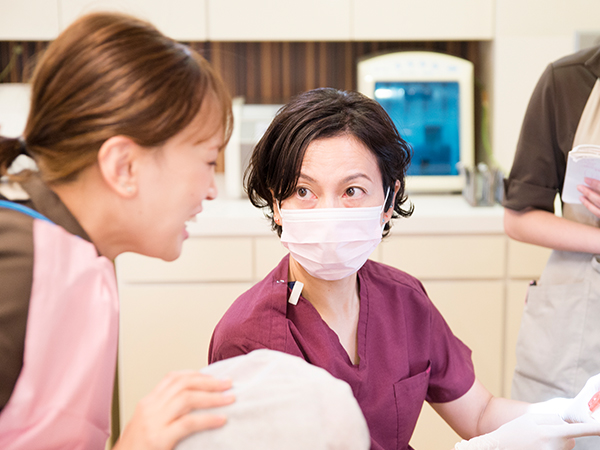

ユミデンタルオフィスで働きたい方へ
この度はユミデンタルオフィスの求人ページをご覧いただき、誠にありがとうございます。当院では、一緒に働くスタッフを募集しています。スタッフ一同、常に笑顔で患者様とコミュニケーションを取りながら、和気あいあいと仕事をしている歯科医院です。
以下に当院の募集要項を掲載しておりますので、歯科医院で働きたいとお考えの方は、まずはお気軽にお問い合わせください。

- 
ユミデンタルオフィスではたらくこと
やりがいを感じる仕事
むし歯や歯周病の治療をはじめ、定期的なメインテナンスまで、患者様とじっくりお話をしながらお口の健康のために関わっていくことができる仕事です。多くの患者様から「ありがとう」の声をいただくことができるほか、自分自身のスキルアップを実感することができるのも大きなやりがいにつながります。
歯科衛生士の資格を活かせる診療システム
当院では、初診から治療後のメインテナンスまで一貫して歯周病治療をベースとした診療システムを構築しています。歯科衛生士としてのメイン業務となる歯周基本治療やメインテナンスに集中して取り組むことができる体制を整えています。
患者様としっかり関われる患者担当制
歯周基本治療からメインテナンスに至るまで、あらゆる業務で患者担当制を採用しています。患者様としっかり関わりながらケアを行うことができ、自然と患者様との信頼関係を築いていけることも大きな特徴です。
教育環境の充実
当院では、優れた知識と技術を持ったプロフェッショナルな歯科衛生士を育成するために、充実した教育カリキュラムを整えています。初心者からステップ毎に指導評価を行うほか、院内での勉強会も行っています。また、さまざまな学会や研修会への参加・発表を行うことで、日本歯周病学会認定歯科衛生士や日本臨床歯周病学会認定歯科衛生士の取得をサポートします。
産休・育休取得実績（リライト）
当院では女性が働きやすい職場を目指し、産休・育休の取得を勧めています。これまで3名のスタッフが産休育休取得し、子育てしながらの職場復帰を実現しています。
歯科衛生士の資格を評価した給与システム
当院では、歯周病治療の主役は医師ではなく歯科衛生士だと考えています。そのため各手当を充実させ、給与面もしっかりサポートしています。
先輩からのメッセージ
藤山果林（歯科衛生士）
新卒で入社し当初は分からない事ばかりで不安な気持ちもありましたが、専門医・認定衛生士の指導のもと、１から歯周治療や 歯科衛生士業務を学ばせていただきました。
私が理解でいるようになるまで、丁寧に指導してくださり、できないところを そのままにせず、１つ１つクリアしていくことで、ステップアップすることができました。
スキルが身につくと、歯科衛生士として患者さんにできることはないか？と向上心も高まりました。 診療中はスタッフ全員、プロフェッショナルとして仕事をしていますが、休憩中は和気藹々と楽しい会話ばかりで、笑い声が 絶えません。
仕事のことはもちろん、仕事以外のことも相談できる心強い先輩達に恵まれ、楽しく充実した日々を過ごすことができています。
募集概要
| 募集職種 | 歯科衛生士(常勤・正社員) |
|---|---|
| 勤務時間 | 10：00～19：30 |
| 休日 | 週休2日/有給休暇有 |
| 給与 | 新卒歯科衛生士21万円＋交通費＋歯科衛生士手当 経験年数・能力に応じて相談 |
| 賞与 | 年2回(基本給の3ヵ月分)※業績による |
| 交通費 | 支給1万円まで |
| 福利厚生 | ・加入保険：雇用保険・労災保険・厚生年金・歯科医師国保 |
| 応募方法 | 電話でご連格の上(履歴書・写真付)を持参してください。見学していただくことも可能です。 お気軽にお問い合わせください。 TEL：099-813-0010 |